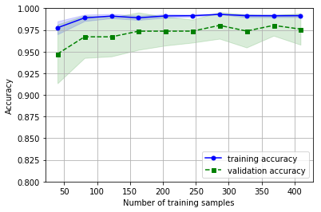
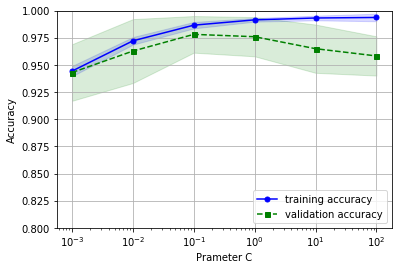
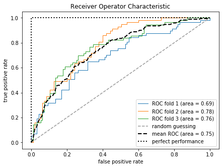

モデルの評価とハイパーパラメータのチューニングのベストプラクティス¶
6.1 パイプラインによるワークフローの効率化¶
- 任意個数の変換ステップを含んだモデルをパイプライン化する
6.1.1 Breast Cancer Wisconsin データセットを読み込む¶
- 悪性・良性の 569 サンプル
In [1]:
import pandas
df = pandas.read_csv('https://archive.ics.uci.edu/ml/machine-learning-databases/breast-cancer-wisconsin/wdbc.data', header=None)
In [2]:
# id
df.loc[:, 0:0].head()
Out[2]:
| 0 | |
|---|---|
| 0 | 842302 |
| 1 | 842517 |
| 2 | 84300903 |
| 3 | 84348301 |
| 4 | 84358402 |
In [3]:
# label: M: malignant, B: benign
df.loc[:, 1].unique()
Out[3]:
array(['M', 'B'], dtype=object)
In [4]:
# features
df.loc[:, 2:].head()
Out[4]:
| 2 | 3 | 4 | 5 | 6 | 7 | 8 | 9 | 10 | 11 | ... | 22 | 23 | 24 | 25 | 26 | 27 | 28 | 29 | 30 | 31 | |
|---|---|---|---|---|---|---|---|---|---|---|---|---|---|---|---|---|---|---|---|---|---|
| 0 | 17.99 | 10.38 | 122.80 | 1001.0 | 0.11840 | 0.27760 | 0.3001 | 0.14710 | 0.2419 | 0.07871 | ... | 25.38 | 17.33 | 184.60 | 2019.0 | 0.1622 | 0.6656 | 0.7119 | 0.2654 | 0.4601 | 0.11890 |
| 1 | 20.57 | 17.77 | 132.90 | 1326.0 | 0.08474 | 0.07864 | 0.0869 | 0.07017 | 0.1812 | 0.05667 | ... | 24.99 | 23.41 | 158.80 | 1956.0 | 0.1238 | 0.1866 | 0.2416 | 0.1860 | 0.2750 | 0.08902 |
| 2 | 19.69 | 21.25 | 130.00 | 1203.0 | 0.10960 | 0.15990 | 0.1974 | 0.12790 | 0.2069 | 0.05999 | ... | 23.57 | 25.53 | 152.50 | 1709.0 | 0.1444 | 0.4245 | 0.4504 | 0.2430 | 0.3613 | 0.08758 |
| 3 | 11.42 | 20.38 | 77.58 | 386.1 | 0.14250 | 0.28390 | 0.2414 | 0.10520 | 0.2597 | 0.09744 | ... | 14.91 | 26.50 | 98.87 | 567.7 | 0.2098 | 0.8663 | 0.6869 | 0.2575 | 0.6638 | 0.17300 |
| 4 | 20.29 | 14.34 | 135.10 | 1297.0 | 0.10030 | 0.13280 | 0.1980 | 0.10430 | 0.1809 | 0.05883 | ... | 22.54 | 16.67 | 152.20 | 1575.0 | 0.1374 | 0.2050 | 0.4000 | 0.1625 | 0.2364 | 0.07678 |
5 rows × 30 columns
In [5]:
from sklearn.preprocessing import LabelEncoder
X = df.loc[:, 2:].values
y = df.loc[:, 1].values
le = LabelEncoder()
y = le.fit_transform(y)
In [6]:
le.transform(['M', 'B'])
Out[6]:
array([1, 0])
In [7]:
from sklearn.model_selection import train_test_split
X_train, X_test, y_train, y_test = train_test_split(
X, y, test_size=0.20, random_state=1
)
6.1.2 パイプラインで変換器と推定器を結合する¶
- 標準化
- 次元圧縮
- 分類
In [8]:
from sklearn.preprocessing import StandardScaler
from sklearn.decomposition import PCA
from sklearn.linear_model import LogisticRegression
from sklearn.pipeline import Pipeline
# List[Tupe[str, Union[Transformer, Estimator]]]
pipe_lr = Pipeline([
('scl', StandardScaler()),
('pca', PCA(n_components=2)),
('clf', LogisticRegression(random_state=1)),
])
In [9]:
pipe_lr.fit(X_train, y_train)
pipe_lr.score(X_test, y_test)
Out[9]:
0.94736842105263153
6.2 k 分割交差検証を使ったモデルの性能の評価¶
- モデルの汎化誤差を評価する
6.2.1 ホールドアウト法¶
- モデル選択 (model selection): チューニングパラメータ（ハイパーパラメータ）の最適な値を探す問題
- ホールドアウト法: データを「トレーニングデータ」「（トレーニングデータの）検証データ」「（性能評価用の）テストデータ」の 3 つ分割する
- 分割方法によって性能評価に影響を及ぼす
6.2.2 k 分割交差検証¶
- データセットをランダムに \(k\) 分割し、 \(k-1\) 個をトレーニング用、 \(1\) 個をテスト用として、ホールドアウト法を \(k\) 回くりかえす
- \(k\) の値は、 \(10\) であることが多い
- \(k\) を大きくするとトレーニングデータが増え、平均をとると、汎化誤差の評価に対するバイアスが減るが、計算コストが増加する
- 層化 k 分割交差検証: 各クラス間の比率が均等になるようにデータセットを分割する
In [10]:
import numpy
from sklearn.model_selection import StratifiedKFold
skf = StratifiedKFold(
n_splits=10,
random_state=1,
)
scores = []
for k, (train, test) in enumerate(skf.split(X_train, y_train)):
pipe_lr.fit(X_train[train], y_train[train])
score = pipe_lr.score(X_train[test], y_train[test])
scores.append(score)
print('CV accuracy: %.3f +/- %.3f' % (numpy.mean(scores), numpy.std(scores)))
CV accuracy: 0.950 +/- 0.029
In [11]:
from sklearn.model_selection import cross_val_score
scores = cross_val_score(
estimator=pipe_lr,
X=X_train,
y=y_train,
cv=10,
n_jobs=-1, # use all available cores
)
In [12]:
print('CV accuracy scores: %s' % scores)
print('CV accuracy: %.3f +/- %.3f' % (numpy.mean(scores), numpy.std(scores)))
CV accuracy scores: [ 0.89130435 0.97826087 0.97826087 0.91304348 0.93478261 0.97777778
0.93333333 0.95555556 0.97777778 0.95555556]
CV accuracy: 0.950 +/- 0.029
6.3 学習曲線と検証曲線によるアルゴリズムの診断¶
- 学習曲線 (learning curve): サンプル数に対する精度の関数
- 検証曲線 (validation curve): パラメータに対する精度の関数
6.3.1 学習曲線を使ってバイアスとバリアンスの問題を診断する¶
- バイアスが高い: 学習不足。モデルが単純すぎる、特徴量が少なすぎる、正則化が強すぎるなど。
- バリアンスが高い: 過学習。モデルが複雑すぎる、特徴量が多すぎるなど。
In [13]:
from matplotlib import pyplot
from sklearn.model_selection import learning_curve
pipe_lr = Pipeline([
('scl', StandardScaler()),
('clf', LogisticRegression(penalty='l2', random_state=0)),
])
train_sizes, train_scores, test_scores = learning_curve(
estimator=pipe_lr,
X=X_train,
y=y_train,
train_sizes=numpy.linspace(0.1, 1.0, 10),
cv=10,
n_jobs=-1,
)
train_mean = numpy.mean(train_scores, axis=1)
train_std = numpy.std(train_scores, axis=1)
test_mean = numpy.mean(test_scores, axis=1)
test_std = numpy.std(test_scores, axis=1)
pyplot.plot(
train_sizes,
train_mean,
color='blue',
marker='o',
markersize=5,
label='training accuracy',
)
pyplot.fill_between(
train_sizes,
train_mean + train_std,
train_mean - train_std,
alpha=0.15,
color='blue',
)
pyplot.plot(
train_sizes,
test_mean,
color='green',
linestyle='--',
marker='s',
markersize=5,
label='validation accuracy',
)
pyplot.fill_between(
train_sizes,
test_mean + test_std,
test_mean - test_std,
alpha=0.15,
color='green',
)
pyplot.grid()
pyplot.xlabel('Number of training samples')
pyplot.ylabel('Accuracy')
pyplot.legend(loc='lower right')
pyplot.ylim([0.8, 1.0])
pyplot.show()

In [14]:
numpy.linspace(0.1, 1.0, 10)
Out[14]:
array([ 0.1, 0.2, 0.3, 0.4, 0.5, 0.6, 0.7, 0.8, 0.9, 1. ])
In [15]:
numpy.linspace(0.1, 1.0, 4)
Out[15]:
array([ 0.1, 0.4, 0.7, 1. ])
6.3.2 検証曲線を使って過学習と学習不足を明らかにする¶
In [16]:
from sklearn.model_selection import validation_curve
param_range = [0.001, 0.01, 0.1, 1.0, 10.0, 100.0]
train_scores, test_scores = validation_curve(
estimator=pipe_lr,
X=X_train,
y=y_train,
param_name='clf__C', # clf__C: C argument of LogisticRegression ('clf')
param_range=param_range,
cv=10, # cv: cross validation
n_jobs=-1,
)
train_mean = numpy.mean(train_scores, axis=1)
train_std = numpy.std(train_scores, axis=1)
test_mean = numpy.mean(test_scores, axis=1)
test_std = numpy.std(test_scores, axis=1)
pyplot.plot(
param_range,
train_mean,
color='blue',
marker='o',
markersize=5,
label='training accuracy',
)
pyplot.fill_between(
param_range,
train_mean + train_std,
train_mean - train_std,
alpha=0.15,
color='blue',
)
pyplot.plot(
param_range,
test_mean,
color='green',
linestyle='--',
marker='s',
markersize=5,
label='validation accuracy',
)
pyplot.fill_between(
param_range,
test_mean + test_std,
test_mean - test_std,
alpha=0.15,
color='green',
)
pyplot.grid()
pyplot.xscale('log')
pyplot.xlabel('Prameter C')
pyplot.ylabel('Accuracy')
pyplot.legend(loc='lower right')
pyplot.ylim([0.8, 1.0])
pyplot.show()

6.4 グリッドサーチによる機械学習モデルのチューニング¶
- チューニングパラメータ・ハイパーパラメータ (hyperparameter)
- e.g. 正則化パラメータ・決定木の深さ
- グリッドサーチで最適化する
6.4.1 グリッドサーチを使ってハイパーパラメータをチューニングする¶
- グリッドサーチは網羅的探索方法
In [17]:
from sklearn.model_selection import GridSearchCV
from sklearn.svm import SVC
pipe_svc = Pipeline([
('scl', StandardScaler()),
('clf', SVC(random_state=1)),
])
param_range = [10.0 ** c for c in range(-4, 4)]
param_grid = [
{'clf__C': param_range, 'clf__kernel': ['linear']},
{'clf__C': param_range, 'clf__gamma': param_range, 'clf__kernel': ['rbf']},
]
gs = GridSearchCV(
estimator=pipe_svc,
param_grid=param_grid,
scoring='accuracy',
cv=10,
n_jobs=-1,
)
gs = gs.fit(X_train, y_train)
In [18]:
gs.best_score_
Out[18]:
0.97802197802197799
In [19]:
gs.best_params_
Out[19]:
{'clf__C': 0.1, 'clf__kernel': 'linear'}
In [20]:
clf = gs.best_estimator_
clf.fit(X_train, y_train)
print('Test accuracy: %.3f' % clf.score(X_test, y_test))
Test accuracy: 0.965
6.4.2 入れ子式の交差検証によるアルゴリズムの選択¶
- 複数のアルゴリズムからあるアルゴリズムを選択したい場合は、入れ子式の交差検証 (nested cross-validation) を用いる
- 入れ子式の交差検証では、推定される汎化誤差と真の汎化誤差にほとんどバイアスがないとされる
- 入れ子式の交差検証は、内外の 2 ループに分かれ、外側のループでトレーニングセットとテストセットに分割し、外側のループで分割されたトレーニングセットに対して、内側のループで \(k\) 分割交差検証を行いモデルを検証する
- e.g. \(5 * 2\) 交差検証では、外側のループでデータを 5 個のサブセットに分割し、内側のループで \(2\) 分割交差検証を行う
In [21]:
# Inside loop: 2-fold cross validation
gs = GridSearchCV(
estimator=pipe_svc,
param_grid=param_grid,
scoring='accuracy',
cv=2,
n_jobs=-1,
)
# Outside loop: split dataset into 5 subsets
scores = cross_val_score(gs, X_train, y_train, scoring='accuracy', cv=5)
print('CV accuracy: %.3f +/- %.3f' % (numpy.mean(scores), numpy.std(scores)))
CV accuracy: 0.965 +/- 0.025
In [22]:
from sklearn.tree import DecisionTreeClassifier
# Inside loop: 2-fold cross validation
gs = GridSearchCV(
estimator=DecisionTreeClassifier(random_state=0),
param_grid=[{'max_depth': [1, 2, 3, 4, 5, 6, 7, None]}],
scoring='accuracy',
cv=2,
n_jobs=-1,
)
# Outside loop: split dataset into 5 subsets
scores = cross_val_score(gs, X_train, y_train, scoring='accuracy', cv=5)
print('CV accuracy: %.3f +/- %.3f' % (numpy.mean(scores), numpy.std(scores)))
CV accuracy: 0.921 +/- 0.029
- SVM の方が決定木よりも性能が高いことがわかるので、入れ子式の交差検証でモデル選択を行うほうがよいかもしれない
6.5 さまざまな性能評価指標¶
6.5.1 混同行列を解釈する¶
In [23]:
pandas.DataFrame([
['真陰性 (PN)', '偽陰性 (FN), 第二種過誤'],
['偽陽性 (FP), 第一種過誤', '真陰性 (TN)'],
],
index=['P', 'N'],
columns=['P', 'N'],
)
Out[23]:
| P | N | |
|---|---|---|
| P | 真陰性 (PN) | 偽陰性 (FN), 第二種過誤 |
| N | 偽陽性 (FP), 第一種過誤 | 真陰性 (TN) |
In [24]:
from sklearn.metrics import confusion_matrix
pipe_svc.fit(X_train, y_train)
y_pred = pipe_svc.predict(X_test)
conf_mat = confusion_matrix(y_true=y_test, y_pred=y_pred)
In [25]:
pandas.DataFrame(
conf_mat,
index=['N', 'P'],
columns=['N', 'P'],
)
Out[25]:
| N | P | |
|---|---|---|
| N | 71 | 1 |
| P | 2 | 40 |
6.5.2 分類モデルの適合率と再現率を最適化する¶
- 誤分類率: \(ERR = \frac{FP + FN}{FP + FN + TP + TN}\)
- 正解率: \(ACC = \frac{TP + TN}{FP + FN + TP + TN} = 1 - ERR\)
- 真陽性率: \(TPR = \frac{TP}{FN + TP}\)
- 偽陽性率: \(FPR = \frac{FP}{FP + TN}\)
TPR, FPR に対する指標:
- 適合率: \(PRE = \frac{TP}{TP + FP}\)
- 再現率: \(REC = TRP = \frac{TP}{FN + TP}\)
- F1 スコア: \(F1 = 2 \times \frac{PRE \times REC}{PRE + REC}\)
In [26]:
from sklearn.metrics import precision_score, recall_score, f1_score
print('Precision: %.3f' % precision_score(y_true=y_test, y_pred=y_pred))
print('Recall: %.3f' % recall_score(y_true=y_test, y_pred=y_pred))
print('F1: %.3f' % f1_score(y_true=y_test, y_pred=y_pred))
Precision: 0.976
Recall: 0.952
F1: 0.964
In [27]:
# custom-score
from sklearn.metrics import make_scorer
scorer = make_scorer(f1_score, pos_label=0)
gs = GridSearchCV(
estimator=pipe_svc,
param_grid=param_grid,
scoring=scorer,
cv=10,
n_jobs=-1
)
6.5.3 ROC 曲線をプロットする¶
- 受信者操作特性 (Receiver Operator Characteristic: ROC)
- ROC 曲線: 分類器が陰陽判定の基準とする閾値 \(T\) を変化させたときの \(TPR\) と \(FPR\) をプロットした曲線
- 閾値の例: ロジスティクス回帰の確率
In [28]:
from sklearn.metrics import roc_curve
y_true = numpy.array([1, 1, 2, 2])
y_score = numpy.array([0.1, 0.4, 0.35, 0.8])
fpr, tpr, thresolds = roc_curve(y_true, y_score, pos_label=2)
print('fpr', fpr)
print('tpr', tpr)
print('thresolds', thresolds)
fpr [ 0. 0.5 0.5 1. ]
tpr [ 0.5 0.5 1. 1. ]
thresolds [ 0.8 0.4 0.35 0.1 ]
In [29]:
y_true = numpy.array([1, 1, 2, 2])
y_score = numpy.array([0.1, 0.2, 0.3, 0.4])
fpr, tpr, thresolds = roc_curve(y_true, y_score, pos_label=2)
print('fpr', fpr)
print('tpr', tpr)
print('thresolds', thresolds)
fpr [ 0. 0. 1.]
tpr [ 0.5 1. 1. ]
thresolds [ 0.4 0.3 0.1]
In [30]:
y_true = numpy.array([1, 2, 1, 2])
y_score = numpy.array([0.1, 0.2, 0.3, 0.4])
fpr, tpr, thresolds = roc_curve(y_true, y_score, pos_label=2)
print('fpr', fpr)
print('tpr', tpr)
print('thresolds', thresolds)
fpr [ 0. 0.5 0.5 1. ]
tpr [ 0.5 0.5 1. 1. ]
thresolds [ 0.4 0.3 0.2 0.1]
In [31]:
from sklearn.metrics import roc_curve, auc
from scipy import interp
pipe_lr = Pipeline([
('scl', StandardScaler()),
('pca', PCA(n_components=2)),
('clf', LogisticRegression(
penalty='l2',
random_state=0,
C=100.0
)),
])
X_train2 = X_train[:, [4, 14]]
In [32]:
pandas.DataFrame(X_train2).head()
Out[32]:
| 0 | 1 | |
|---|---|---|
| 0 | 0.10360 | 0.007231 |
| 1 | 0.10030 | 0.011490 |
| 2 | 0.07005 | 0.007389 |
| 3 | 0.08108 | 0.004405 |
| 4 | 0.08682 | 0.007702 |
In [33]:
numpy.linspace(0, 1, 100)
Out[33]:
array([ 0. , 0.01010101, 0.02020202, 0.03030303, 0.04040404,
0.05050505, 0.06060606, 0.07070707, 0.08080808, 0.09090909,
0.1010101 , 0.11111111, 0.12121212, 0.13131313, 0.14141414,
0.15151515, 0.16161616, 0.17171717, 0.18181818, 0.19191919,
0.2020202 , 0.21212121, 0.22222222, 0.23232323, 0.24242424,
0.25252525, 0.26262626, 0.27272727, 0.28282828, 0.29292929,
0.3030303 , 0.31313131, 0.32323232, 0.33333333, 0.34343434,
0.35353535, 0.36363636, 0.37373737, 0.38383838, 0.39393939,
0.4040404 , 0.41414141, 0.42424242, 0.43434343, 0.44444444,
0.45454545, 0.46464646, 0.47474747, 0.48484848, 0.49494949,
0.50505051, 0.51515152, 0.52525253, 0.53535354, 0.54545455,
0.55555556, 0.56565657, 0.57575758, 0.58585859, 0.5959596 ,
0.60606061, 0.61616162, 0.62626263, 0.63636364, 0.64646465,
0.65656566, 0.66666667, 0.67676768, 0.68686869, 0.6969697 ,
0.70707071, 0.71717172, 0.72727273, 0.73737374, 0.74747475,
0.75757576, 0.76767677, 0.77777778, 0.78787879, 0.7979798 ,
0.80808081, 0.81818182, 0.82828283, 0.83838384, 0.84848485,
0.85858586, 0.86868687, 0.87878788, 0.88888889, 0.8989899 ,
0.90909091, 0.91919192, 0.92929293, 0.93939394, 0.94949495,
0.95959596, 0.96969697, 0.97979798, 0.98989899, 1. ])
In [34]:
fig = pyplot.figure(figsize=(7, 5))
mean_tpr = 0.0
mean_fpr = numpy.linspace(0, 1, 100)
all_trp = []
cv = StratifiedKFold(n_splits=3, random_state=1)
for i, (train, test) in enumerate(cv.split(X_train2, y_train)):
probas = pipe_lr.fit(
X_train2[train],
y_train[train],
).predict_proba(
X_train2[test]
)
fpr, tpr, thresholds = roc_curve(
y_train[test],
probas[:, 1],
pos_label=1
)
mean_tpr += numpy.interp(mean_fpr, fpr, tpr)
mean_tpr[0] = 0.0
roc_auc = auc(fpr, tpr)
pyplot.plot(fpr, tpr, lw=1, label='ROC fold %d (area = %0.2f)' % (i + 1, roc_auc))
# Random guessing
pyplot.plot(
[0, 1],
[0, 1],
linestyle='--',
color=(0.6, 0.6, 0.6),
label='random guessing'
)
mean_tpr /= cv.get_n_splits()
mean_tpr[-1] = 1.0
mean_auc = auc(mean_fpr, mean_tpr)
pyplot.plot(
mean_fpr,
mean_tpr,
'k--',
label='mean ROC (area = %0.2f)' % mean_auc,
lw=2
)
pyplot.plot(
[0, 0, 1],
[0, 1, 1],
lw=2,
linestyle=':',
color='black',
label='perfect performance',
)
pyplot.xlim([-0.05, 1.05])
pyplot.ylim([-0.05, 1.05])
pyplot.xlabel('false positive rate')
pyplot.ylabel('true positive rate')
pyplot.title('Receiver Operator Characteristic')
pyplot.legend(loc="lower right")
pyplot.show()
